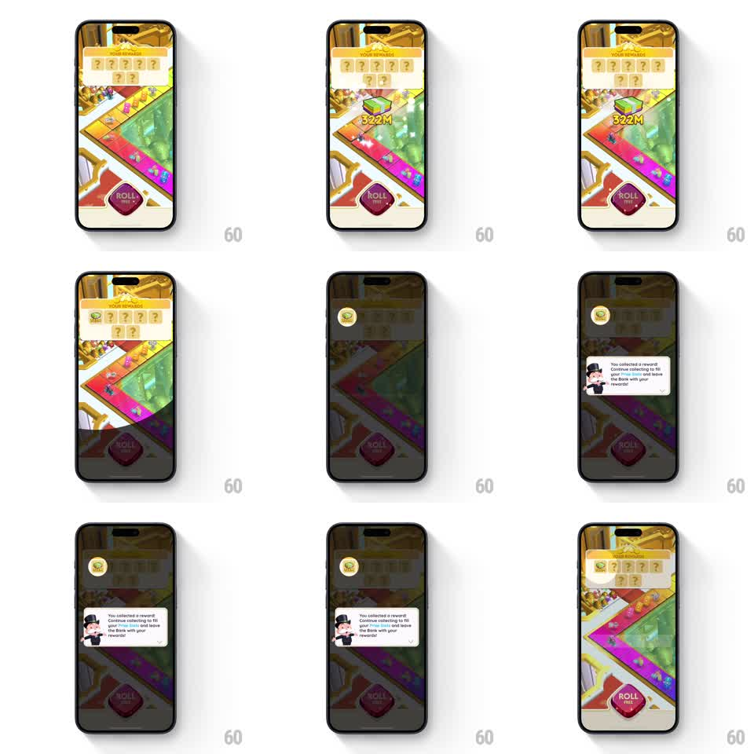

Media
Frame-by-frame

Rebuild this animation 1:1: Monopoly Go's reward spotlight - the board dims, the collected reward tile stays lit in a spotlight, and Mr. Monopoly slides in with an encouraging tooltip.

Rebuild this animation 1:1: Monopoly Go's reward spotlight - the board dims, the collected reward tile stays lit in a spotlight, and Mr. Monopoly slides in with an encouraging tooltip. ## Integration Integration: stack-agnostic spec - springs given as stiffness/damping, timed motions as duration + curve; map every value to your framework and animation library of choice. ## Scene The Monopoly Go board with a "YOUR REWARDS! MONTE CARLO" banner of question-mark tiles and a ROLL button. One reward tile flips to reveal a cash stack with "322M", then the whole board dims except a spotlight on that tile, and Mr. Monopoly appears with a tooltip: "You collected a reward! Continue collecting to fill your prizes bar and leave the Bank with your rewards!" ## Motion spec Pattern: spotlight dim with mascot tooltip, ~2.5s. - A reward tile flips over (rotateY 180, 300ms) revealing the cash stack, its value "322M" popping in (scale 1.3 to 1, 200ms) with a gold glow pulse. - The board dims to 40% (350ms) while the revealed tile stays at full brightness inside a soft-edged spotlight mask. - Mr. Monopoly slides in from the left (spring stiffness 320 damping 18) as his tooltip bubble pops open (scale 0.8 to 1, stiffness 400 damping 16). - The tooltip holds 1.5s, then everything reverses: bubble and mascot exit left (250ms), the board undims (300ms), the revealed tile joining the banner row. ## Calibration - The spotlight edge is a soft radial falloff, not a hard cutout. - The dim, mascot entrance, and bubble pop overlap in that order - the staging reads as one guided beat. ## Reduced motion Elements fade; no spotlight sweep. ## Don't miss - Only the collected tile is revealed; the other tiles keep their question marks. - The tooltip's tail points at Mr. Monopoly, positioned left of the spotlight.